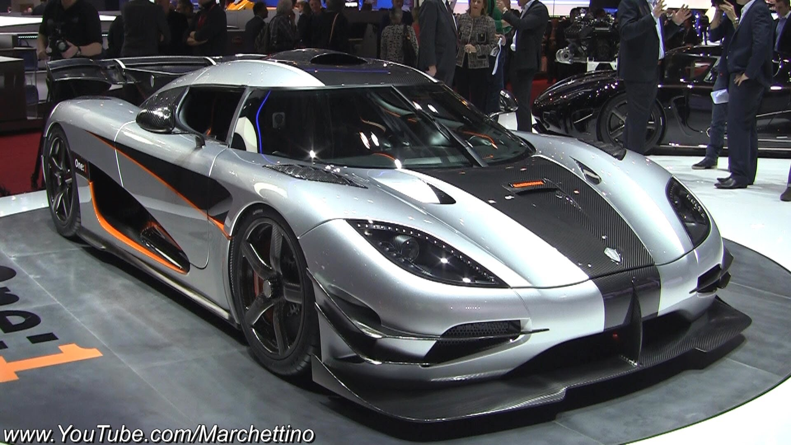
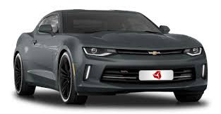

Koenigsegg Agera One:1 |
|
|  More Images | The Koenigsegg Agera is a mid-engined sports car produced by Swedish car manufacturer Koenigsegg since March 2011. It is a successor to the Koenigsegg CCX/CCXR. The name comes from the Swedish verb 'agera' which means "to act" or in imperative form "(You) act!". It was named Hypercar of the Year in 2010 by Top Gear magazine. As of November 2017 the Agera RS model is the world's fastest production car, with a GPS-verified two-way average top speed of 277.9 mph (447 km/h) and a fastest straight-line speed of 284.55 mph (458 km/h). The Agera is powered by an in-house developed 5.0-litre twin-turbocharged V8 engine which produces 940 PS (927 hp; 691 kW) at 6,900 rpm and 1,100 N⋅m (810 lb⋅ft) of torque at 4,000 rpm. Total weight of the engine is only 197 kg (434 lb) thanks to a carbon fibre inlet manifold and the aluminium construction. The transmission is a specially developed 7-speed dual-clutch with paddle shifters. It is the first dual-clutch transmission to feature only one input shaft. The second clutch slows down the input shaft during up shifts in order to reduce the time it takes to synchronize the next gear, resulting in faster shift times. Most notably, the transmission weighs only 81 kg |
Chevrolet Camaro |
|
|  More Images | The Chevrolet Camaro is an American automobile manufactured by Chevrolet, classified as a pony car and some versions also as a muscle car. It went on sale on September 29, 1966, for the 1967 model year and was designed as a competing model to the Ford Mustang. The car shared its platform and major components with the Pontiac Firebird, also introduced for 1967. Four distinct generations of the Camaro were developed before production ended in 2002. The nameplate was revived on a concept car that evolved into the fifth-generation Camaro; production started on March 16, 2009 Introduced in February 1970, the second-generation Camaro was produced through the 1981 model year, with cosmetic changes made in 1974 and 1978 model years. The car was heavily restyled and became somewhat larger and wider with the new styling. Still based on the F-body platform, the new Camaro was similar to its predecessor, with a unibody structure, front subframe, an A-arm front suspension, and leaf springs to control the solid rear axle. Road & Track picked the 1971 SS350 as one of the 10 best cars in the world in August 1971. RS (shown to the right), SS package was dropped in 1972 and reintroduced in 1996. The 1980 and 1981 Z28 models included an air induction hood scoop with an intake door that opened under full throttle. |